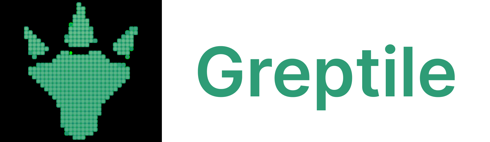
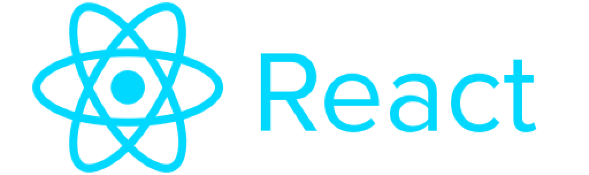
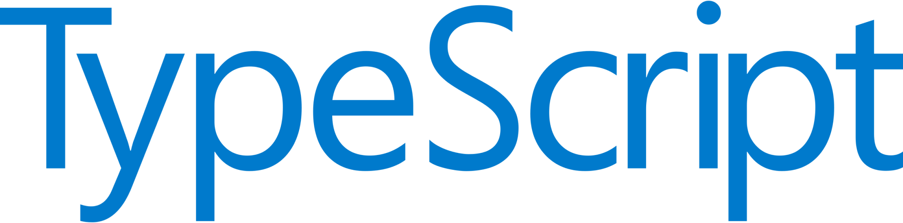
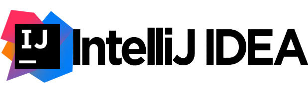
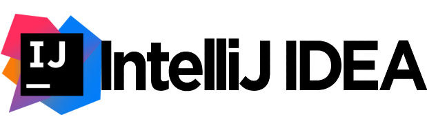
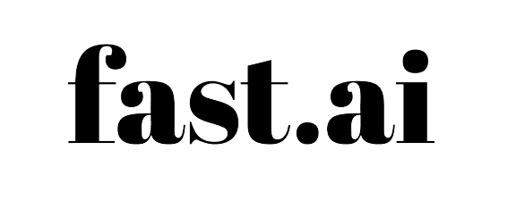
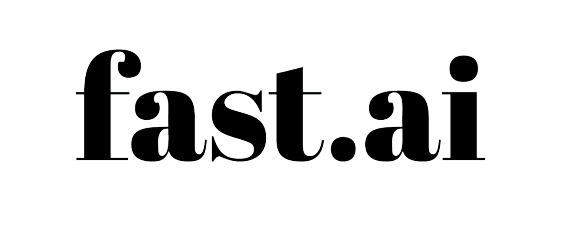

Java, TypeScript, React, Google APIs (Mail, Maps, Calendar, Sheets), AWS, Linux, Selenium, Quartz, Spring, Gradle, JUnit, Twilio, HTML, CSS, Figma, Postman
The back-end, implemented with Java/Spring, interacts with various web platforms such as Yelp using Selenium. Users of these platforms can request and promptly receive custom quotes and availability provided by the app. The Quoting API is also utilized by the website and a desktop CLI app.
The app analyzes quote requests to determine the options the business can offer. The company typically has multiple teams working in different areas on jobs of varying sizes, starting and finishing at different times. The teams themselves can consist of 2-6 members, use different sizes of trucks, and require different sets of equipment.
In performing this analysis, the app considers the current schedule and all relevant factors related to the teams. It strives to balance customer convenience, minimize idle driving miles and team hours, and ensure that an appropriately sized truck with the necessary equipment is provided. If a perfect match isn't possible, the program suggests alternative options and may offer a discount if the customer agrees to a less convenient time.
Once the customer sends a booking request, the job is added to the spreadsheets and calendar via Google APIs, followed by the customer and each member of the assigned team receiving email and SMS notifications. The day before the job, the customer and each team member receive another SMS asking them to confirm their readiness for the move. If someone does not confirm, the manager is notified.
Additional functions include requesting feedback and reviews, tracking revenue and expenses, performing accounting, monitoring a database of blacklisted customers among moving companies, and keeping track of important due dates.

As I was taking my first Java course, I was also helping my friend to start a moving company. One of my responsibilities was responding to a lot of quote requests every day. It was a repetitive task that required a quick and accurate response. Sometimes I would spend too much time doing calculations, so the customer would move forward with another business, and sometimes I would make mistakes in a hurry. That's when I decided to apply my just-learned programming skills to improve my efficiency.
A month later I rolled out my first build. The product was raw and downright terrible. My program would crash every few hours and I often had to spend long nights testing and debugging. Quite often I would sit in a class and a customer would write something ridiculous in their quote request sending my software to a crash and requiring me to respond to quotes manually.
Despite a bumpy start, the initiative turned out a tremendous success. Customers loved our quick and detailed quotes and booked their moves with us by the time others managed to reply. The app reduced the manager's (that's also me) workload by 80% and increased the business' revenue by 150%. As time went by and I was becoming a better programmer, I was improving my code and even had to rewrite almost the entire project twice. Throughout the years, the app got many new features and became a robust product.




This project is a React application that allows users to upload an image of a design, process it using the OpenAI API and generate code based on it. It utilizes the Greptile API for processing GitHub repositories and generating code. Greptile knows your repo like a senior developer, so it will tell you exactly what files need to be updated to get the desired design.
A bit of practice with TypeScript, React, Vite, and Prism. Got to play around with prompt designing and response parsing. Also learned how to safely manage API keys in production.

The project is a toy-chat-app. Messages are broadcasted via WebSocket, so users can chat in real time!
While working on this project, I learned about the WebSocket protocol and the ActionCable feature. For the front-end, I decided to experiment and, instead of using the familiar Bootstrap, tried out Semantic UI, which I found to be very convenient and intuitive. Lastly, I gained hands-on experience with Redis.

The app is hosted on a free Render.com hosting.
The server might take up to 60 seconds to spin up.
The project is a toy-blog-app. Users can view published articles, filter them by Categories, and read what they are most interested about. Users can also sign up to be able to post, edit, and delete articles of their own. The app has accounts with admin priveleges. Admins can create new categories, edit and delete any articles, and also delete user profiles.
Implementing this project provided me with a comprehensive understanding of how Rails applications are built.
I gained insights into the responsibilities of each part of the MVC (Model-View-Controller) framework and learned
how migrations work. I also developed proficiency in creating CRUD (Create, Read, Update, Delete)
functions and managing multiple resources.
Additionally, I built an authentication system from scratch and utilized Bootstrap for front-end development.
I worked with one-to-many and many-to-many associations at the database layer and successfully deployed
the project to a production environment.
This project also allowed me to practice my skills with both Bootstrap and Ruby.
 

In this project, I built a 2D tile-based world exploration engine that generates pseudorandom levels. One of the most complex parts of the project was writing an algorithm that would draw rooms and hallways such that all the spaces are connected and no walls break into open space. User can save their progress, load the saved game and continue playing. Additional features include character animations, cut scenes, and sound effects. The player's task is to explore the level and eliminate all the monsters. Once the level is cleared, the boss will show up for the final fight.
This long software engineering project required a great deal of exploration and experimentation. The goal was to practice handling a larger piece of code in the hopes of emulating something like a product development cycle. It was a large design project that required me to work through every stage of development from ideation to presentation. Some of the most interesting aspects of the project were designing gameplay, adding music and sounds, and creating character animations.

A browser based tool for exploring the history of word usage in English texts. The program allows to graph how popular was a chosen word in a given year in English texts starting from 1470. User can enter multiple words and choose a time span of interest. Additional functions include search of hyponyms and finding the shortest path between two words.
The project had an emphasis on creating a custom data structure that would allow handling large amounts of data in an efficient manner. I learned how to work with big data, graphs, parse large cvs files, and manipulate the extracted data. Additionally, I had to do a bit of software engineering to set up a web server that can handle NgordnetQueries.


A Tic-Tac-Toe game that can be played with another person or a computer player. Playing against the computer makes no sense because you can never beat it :)
In this project, I learned about java GUI libraries. Buttons, fields, and event listeners - all that was new for me as I was building my first Java application with a GUI ever!
 


A web app that uses AI to recognize whether a canine-looking animal on a picture is a Wolf, Coyote, Dog, or Fox.
Building this app, I became familiar with the underlying principles of neural networks, machine learning, and artificial intelligence. I learned how to pick the right model, training data of proper size and quality, and how to train the model then.


Working with two other students, made our very first contribution to an open-source project. Our mentor picked for us an open bug that seemed to be moderately difficult but turned out to be a deeply rooted version compatibility issue.
In this project, I learned what it means to dive head-on into an entirely unknown codebase of hundreds of thousands of lines of code. At times we were totally lost, and at times just super frustrated. But we cheered each other up and didn't give up. Only through efficient teamwork and close collaboration were we able to identify the root of the problem and find a fix to it.


The Scheme Interpreter project involved creating an interpreter for a subset of the Scheme programming language. The project required implementing the evaluation and application of Scheme expressions, as well as handling special forms and creating classes to describe Scheme expressions.
For this project, I had to learn the Scheme language and underlying principles of its work. I learned how to implement the evaluation and application of Scheme expressions, as well as handle special forms and create classes to describe Scheme expressions. Debugging and testing of my code took significant time as the project involved a lot of corner cases. Additionally, I gained experience with designing and implementing an interpreter for a programming language and get a better understanding how programming languages function behind the scenes. I had to think about the issues that arise in the design of a programming language and consider how they can impact the implementation of an interpreter. Working with a partner, I got a chance to further improve my teamwork, leadership, and collaboration skills.


Ants vs. Some Bees is a tower defence computer game. As the ant queen, you populate your colony with the bravest ants you can muster. Your ants must protect their queen from the evil bees that invade your territory. Irritate the bees enough by throwing leaves at them, and they will be vanquished. Fail to pester the airborne intruders adequately, and your queen will succumb to the bees' wrath. This game is inspired by PopCap Games' Plants Vs. Zombies.
The implementation involved a lot of object-oriented programming. I implemented various ant types, including HarvesterAnts and ThrowerAnts, and created a system for bees to move through the tunnel and attack ants. I also had to consider concepts such as health, food costs, and turn order to make the game functioning properly. This was a pretty large project, so efficient teamwork was very important.


Hog is a dice simulator game. Players take turns rolling dices and trying to be the first to reach a certain number of points. User can play against another person or a computer player. Computer can choose one of the playing strategies ranging from a naive one to a quite sophisticated and hard-to-beat one. There are special rules for rolling zero dice and reaching perfect square scores.
Working on the Hog project, I got practice with programming skills in Python, including use of control statements and higher-order functions. I also learned how to design and implement a simulation for a dice game and various playing strategies. I practiced debugging and testing my code. Additionally, working with a partner provided me with the chance to improve my teamwork and collaboration skills.


A web program that can measure typing speed and correct spelling errors. The project included text samples to be typed and a web server for a graphical user interface, provided by UC Berkeley’s CS61A course staff.
Reading from and writing to files, string manipulations, recursion, testing and debugging.